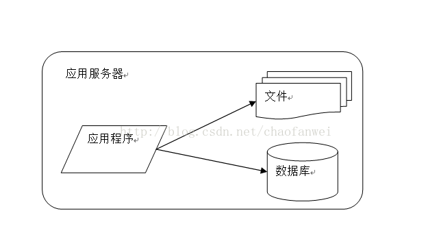
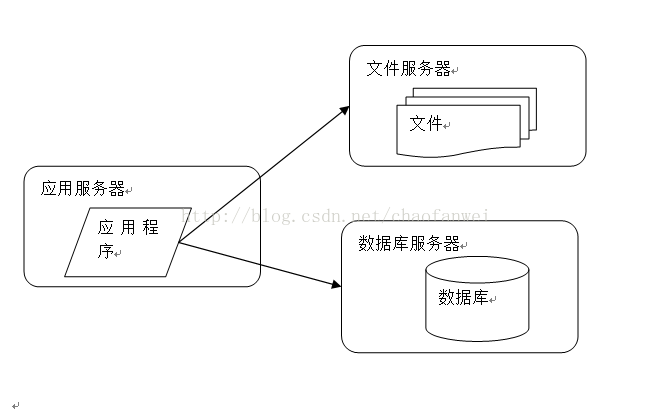
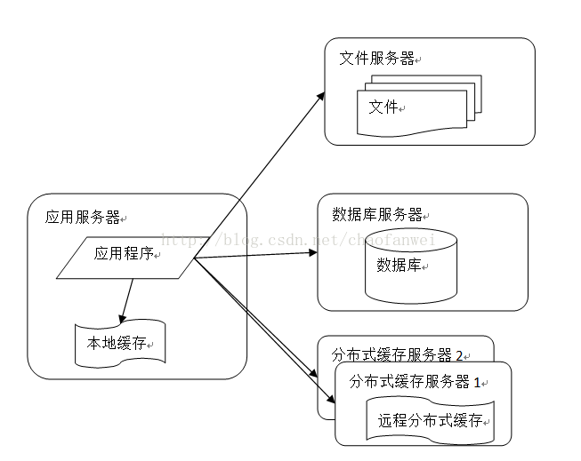
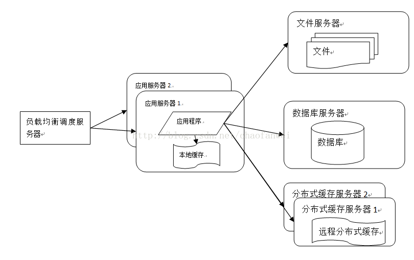
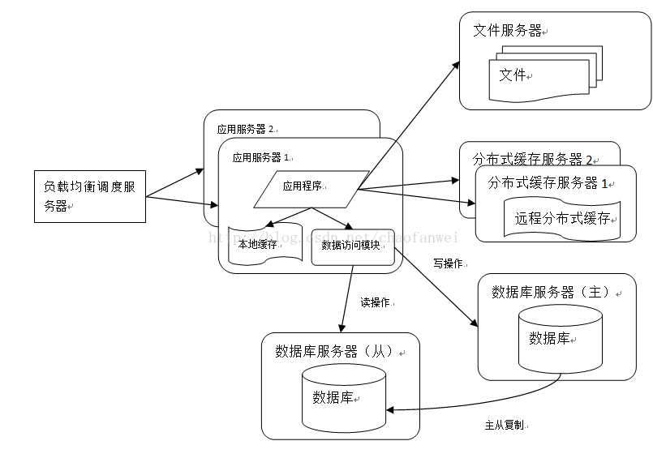
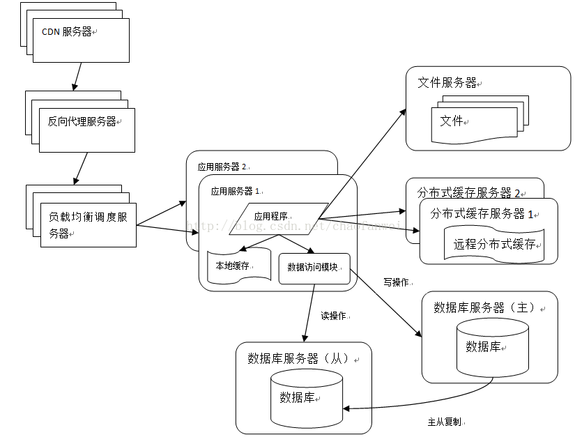
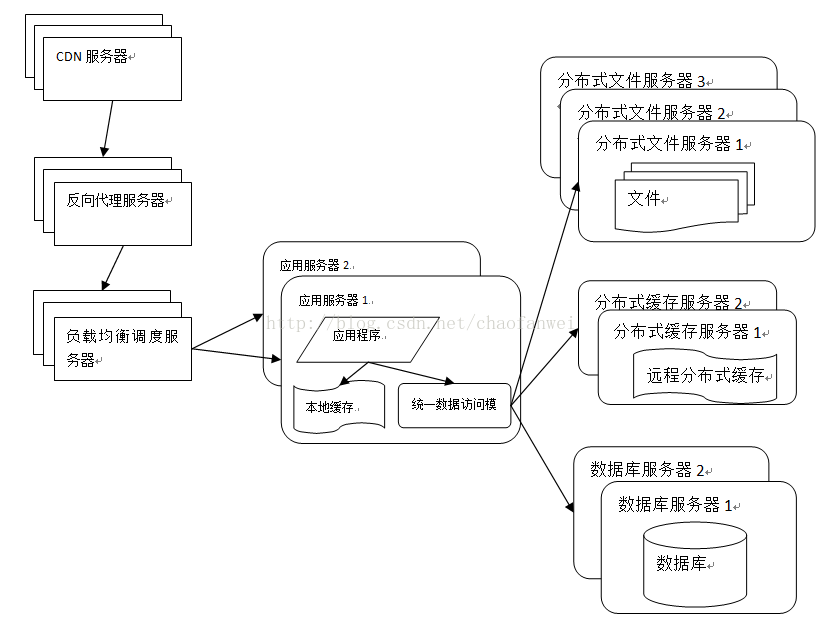
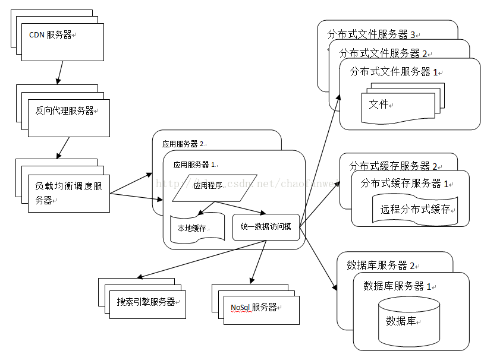
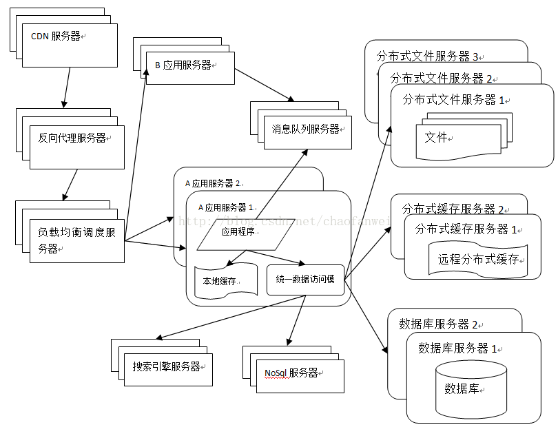
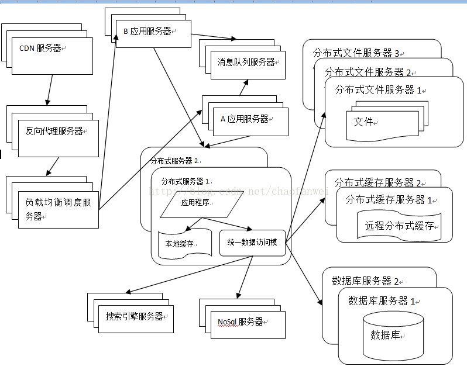

分享人：徐元祥
1.背景介绍
2.知识剖析
3.常见问题
4.编码实战
5.扩展思考
6.参考文献
7.更多讨论
在了解RMI和RPC之前，先了解下服务器的网站的架构










那么网站为了应付高并发和业务量越来越大，于是就需要将每个模块分开，一个模块一个服务器，将一个软件的功能进行拆分，比如搜索放在一个服务器，购物车放到另一个服务器，通过服务器的互相调用实现搜索完物品，加入到购物车。
这样的话就需要实现服务器之间的互相调用，这样的话就需要分布式的架构。
其中的分布式的远程通信技术有RMI、MINA、ESB、Burlap、Hessian、SOAP、EJB和JMS等
这次讲的就是RMI和RPC之间的通信技术的区别
在此之前先了解一下基本的原理，从底层层面来看，网络通信需要做的就是将流从一台计算机传输到另一台计算机，基础传输协议和网络IO来实现，所有的分布式都是基于这个原理来实现的。
远程服务通讯，需要达到的目的是在一台计算机上发起请求，另一台计算机接收到了请求后处理并返回处理结果。
为了方便就有了应用层协议，其中就有咱们讲的RMI和RPC协议
RMI和RPC的区别
RMI和RPC都是远程对象方法调用，区别有RPC支持多种语言，而RMI只支持Java语言。
RMI和RPC的最主要的区别在于方法的调用。
在RMI中，每个远程方法都具有方法签名，如果一个方法在服务器上执行，但是没有匹配的签名被添加到这个接口上，那么这个接口就不能够被RMI调用
而在RPC中，当一个请求到达RPC服务器上的时候，这个请求就包含了一个参数集和一个文本值，通常形成“classname.methodname”的形式，这就向服务器表明，被请求的方法为“classname”的类中，名叫“methodname。然后RPC服务器就去搜索与之相匹配的类和方法，并把它作为那种方法参数类型的输入。
RPC:远程过程调用，用于一个进程调用另一个进程的过程，从而提供了分布能力
RMI:远程方法调用，在远程过程调用的基础上，提供了分布式对象的通信。允许运行在java虚拟机的对象调用运行在另一个虚拟机上的对象的方法，可以是不同进程也可以是不同计算机
RMI的工作原理
首先、RMIService必须先启动并开始监听对应的端口
其次、RMIService将自己提供的服务的实现类注册到RMIService上，并指定一个访问路径供RMIClient使用
最后、RMIClient使用事先知道的路径到RMIService上去寻找这个服务，并使用这个服务在本地的接口调用服务的具体方法
https://zhuanlan.zhihu.com/p/52503248
https://blog.csdn.net/xiaominthere/article/details/46501505
https://zhuanlan.zhihu.com/p/50678735
https://zh.wikipedia.org/wiki/Java远程方法调用
https://www.cnblogs.com/xt0810/p/3640167.html
https://blog.csdn.net/jianghuchuanke/article/details/81902449
https://blog.csdn.net/baidu_39511645/article/details/78345573